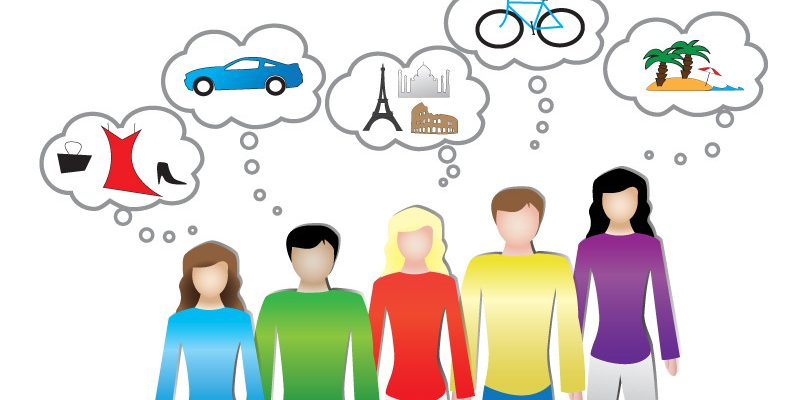

EC Career Resources:
EC Career Resources
Job Searching
Interview Preparation
Discover Your Intrests
Software Available
Past Internships
Contact Your Advisor
Discover Your Interests
Career Assessments:
Clich Here
